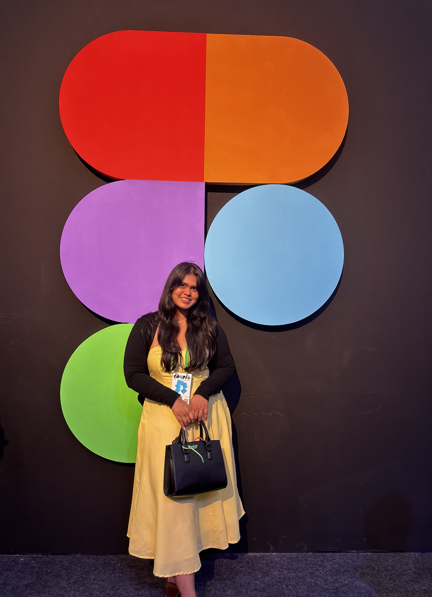
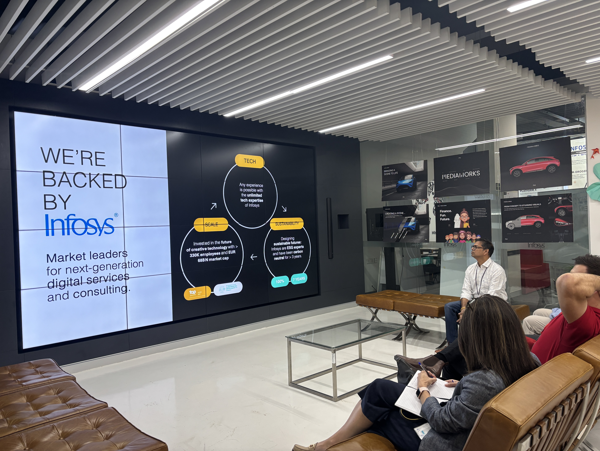
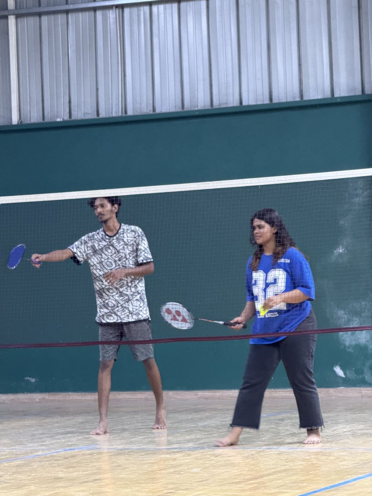
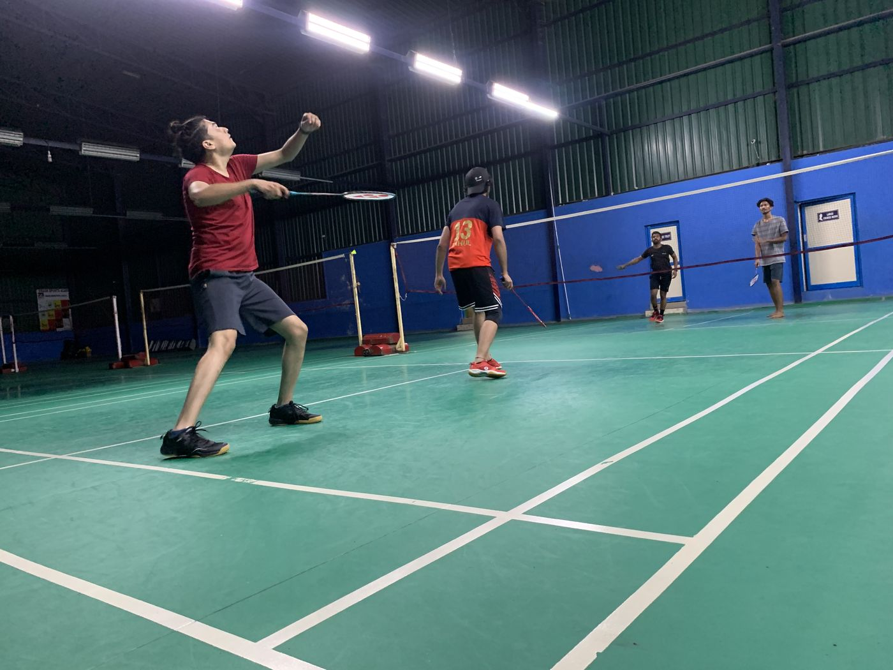
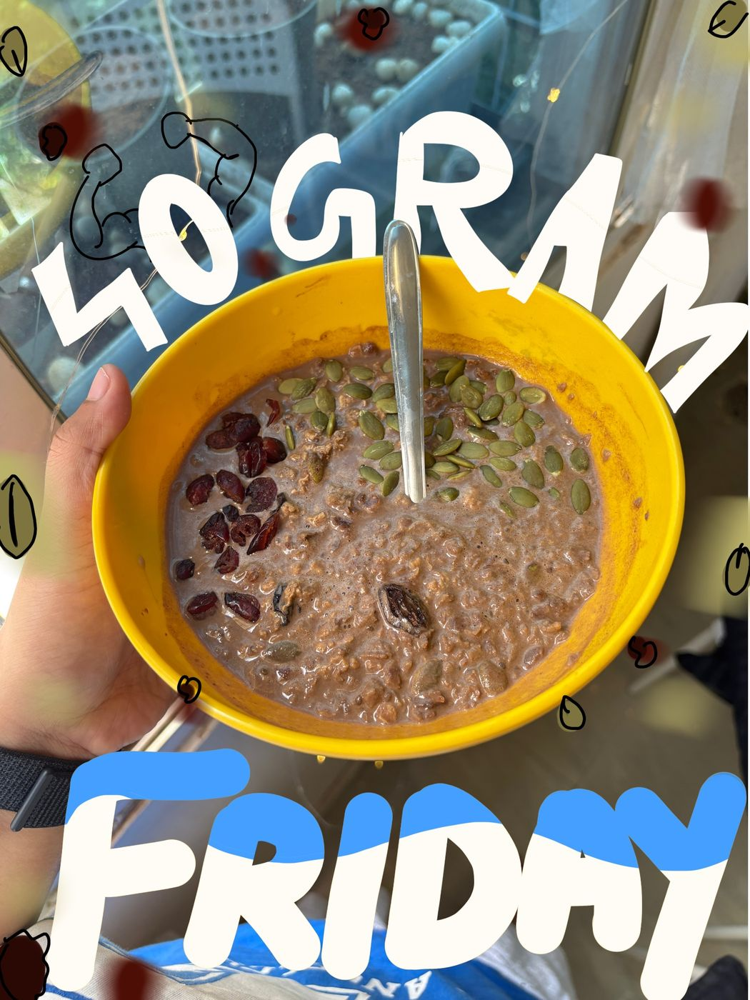
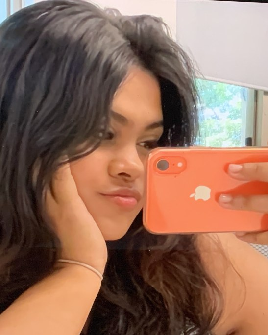

Hello!
I’m Tamanna.
Design system architect and lead product designer from Bengaluru, India.

How I work
I work in two ways, depending on the problem.
Whiteboard first, build second
For business problems and new tech solutioning, I start at the whiteboard. I get the problem straight before anything gets built.
Build first, refine as I go
For features, brand concepts and quick hands-on tools or games, I build a rough version from scratch, use it, test it, then go back to the whiteboard and refine.
AI has made it easy to get something out there and test it, so I do that a lot more now.
whiteboard first
then build
test and refine
What drives me
The sweet spot where structure meets creativity.
Mentoring young designers
I’m passionate about mentoring young designers and helping them grow.
Thoughtful design systems
I love contributing to cultures that value thoughtful design systems.
If you’re building something cool, chaotic or complex, count me in.
sticky notes included
mentoring

structure meets creativity
My story
I wanted to be a designer since class 8. I just didn’t know it was going to be digital design.
I loved playing games too, and I put all that passion, and a lot of thought, into becoming one.
These days I try to solve everyday problems just because I can. I once built and launched a small tool on my terminal so I wouldn’t have to get my laptop messy while cooking or eating. Right now I’m building e-commerce experiences that help people make conscious choices and check out faster: ethical design that keeps the business and the experience seamless.
Scroll on for the journey, newest first.
Vintage finds

games
Landmark Group
Senior Product Designer
- Leading customer experience revamps across web, mWeb and app for legacy retail brands including MAX, Babyshop, Splash and Centerpoint in the UAE region.
- Shipped a large-scale brand revamp for Babyshop, covering the product page, basket and checkout on the app.
- Driving DesignOps: building multi-brand design systems with interactive documentation, and improving how design and development work together.
- Building an internal platform for design system governance, tokenisation and workflows, and co-created a plugin that syncs tokens to developer repositories.
Wongdoody, an Infosys company
Senior Lead UX Designer, then Lead UX Designer
- Drove product thinking from 0 to 1 and led end-to-end UX strategy across multiple enterprise platforms.
- Led a team of designers while working with business, tech and consultancy stakeholders, and mentored junior designers.
- Ran sessions on design systems, accessibility and using AI to work smarter as a designer.
- Delivered across finance, retail, logistics and manufacturing, and ran early workshops with product, business and engineering to align on direction.
Swiggy Instamart
- Highlighted brand SKUs and designed storefront campaign UI that went live on the Instamart app for Christmas, New Year, Valentine’s Week, Holi, Mangosteen and the summer campaign.
- Worked with the design team to set themes, visual direction and final assets, keeping the look consistent across in-app placements.
Freelance and startups
Product, branding and strategy
- Took on a mix of freelance projects across product, branding and strategy.
- Built products with startups in Bhubaneswar and Mumbai, doing a lot of product, branding and strategy work.
- Picked up a small photography stint along the way.
National Institute of Fashion Technology, Bhubaneswar
Bachelor of Design, Design and Visual Communications
Best Graduation Project II
Before that, higher secondary education in Science at Mother’s Public School, 2016 to 2018.
Out of office
After hours, you’ll find me toggling between too many hobbies: sketching, chasing sunsets, hoarding new books, experimenting with yet another side project, or just backpacking. I believe winding down is an art too.




